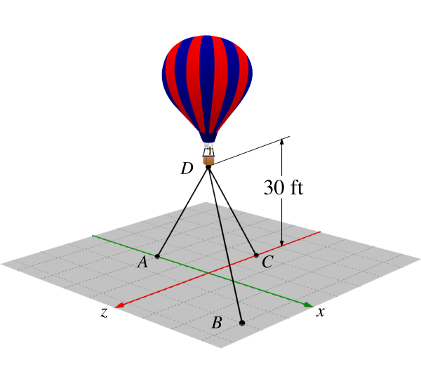
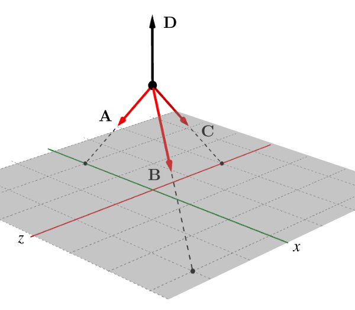

![Using your right hand, put your palm at the origin and point your fingers along the positive x axis. Then curl your fingers towards the positive y axis. Your thumb will point in the direction of the positive z axis. In this case, if the positive x axis is horizontal and to the right and the positive y axis is vertical and upwards, the positive z axis will be coming towards you. Remember that the three axes are mutually perpendicular, i.e. each axis is perpendicular to both of the others. The right-hand rule is important in many aspects of engineering, so make sure that you understand how it works. Mistakes will lead to sign errors.](external/images/rhr2.svg)
Example 3.5.3. Balloon.
A hot air balloon \(\ft{30}\) above the ground is tethered by three cables as shown in the diagram.
If the balloon is pulling upwards with a force of \(\lb{900}\text{,}\) what is the tension in each of the three cables?
The grid lines on the ground plane are spaced \(\ft{10}\) apart.

Answer.
\begin{align*}
A \amp = \lb{464} \amp B \amp = \lb{402} \amp C \amp = \lb{309}
\end{align*}
Solution.
-
Strategy.The three tensions are the unknowns which we can find by applying the three equilibrium equations.We’ll establish a coordinate system with the origin directly below the balloon and the \(y\) axis vertical, then draw and label a free-body diagram.Next we’ll use the given information to find two points on each line of action to find the components of each force in terms of the unknowns.When the \(x\text{,}\) \(y\) and \(z\) components of all forces can be expressed in terms of known values, the equilibrium equations can be solved.
-
Geometry.From the diagram, the coordinates of the points are\begin{align*} \text{A} \amp= (-20,0,0)\amp \text{B}\amp= (30,0,20) \amp \text{C}\amp= (0,0,-20) \amp \text{D} \amp = (0,30,0) \end{align*}Use the point coordinates to find the \(x\text{,}\) \(y\) and \(z\) components of the forces.\begin{align*} A_x \amp = \frac{-20}{L_A} A \amp A_y \amp = \frac{-30}{L_A} A \amp A_z \amp = \frac{0}{L_A} A \\ B_x \amp = \frac{30}{L_B} B \amp B_y \amp = \frac{-30}{L_B} B \amp B_z \amp = \frac{20}{L_B} B \\ C_x \amp = \frac{0}{L_C} C\amp C_y \amp = \frac{-30}{L_C} C\amp C_z \amp = \frac{-20}{L_C} C \end{align*}Where \(L_A\text{,}\) \(L_B\) and \(L_C\) are the lengths of the three cables found with the distance formula.\begin{align*} L_A \amp= \sqrt{(-20)^2 + (-30)^2+ 0^2} \amp= \ft{36.1}\\ L_B \amp= \sqrt{30^2 + (-30)^2 +20^2} \amp= \ft{46.9}\\ L_C \amp= \sqrt{0^2+(-30)^2 + (-20)^2} \amp= \ft{36.1} \end{align*}
-
Equilibrium Equations.Applying the three equations of equilibrium yields three equations in terms of the three unknown tensions.\begin{align*} \Sigma F_x \amp = 0\\ \amp A_x + B_x + C_x = 0\\ \amp - \frac{20}{36.1} A + \frac{30}{46.9} B + 0\, C = 0\\ A \amp= 1.153\, B \amp (1)\\\\ \Sigma F_z \amp= 0\\ \amp A_z + B_z + C_z = 0\\ \amp 0\, A + \frac{20}{46.9}B -\frac{20}{36.1} C = 0\\ C \amp= 0.769 \,B \amp (2)\\\\ \Sigma F_y \amp= 0\\ \amp A_y + B_y + C_y + D = 0\\ \amp -\frac{30}{36.1} A -\frac{30}{46.9} B - \frac{30}{36.1} C + 900 = 0\\ \amp 0.832\, A + 0.640\, B + 0.832\, C = \lb{900} \amp (3) \end{align*}Solving these equations simultaneously yields the answers we are seeking. One way to do this is to substitute equations (1) and (2) into (3) to eliminate \(A\) and \(C\) and solve the resulting equation for \(B\text{.}\)\begin{align*} 0.832\, (1.153\, B) + 0.640\, B + 0.832\, (0.769 \,B) \amp= \lb{900}\\ 2.24 B \amp = \lb{900}\\ B \amp = \lb{402} \end{align*}With \(B\) known, substitute it into equations (1) and (2) to find \(A\) and \(C\text{.}\)\begin{align*} A \amp = 1.153\, B \amp C \amp =0.769\, B \\ \amp = \lb{464} \amp \amp = \lb{309} \end{align*}